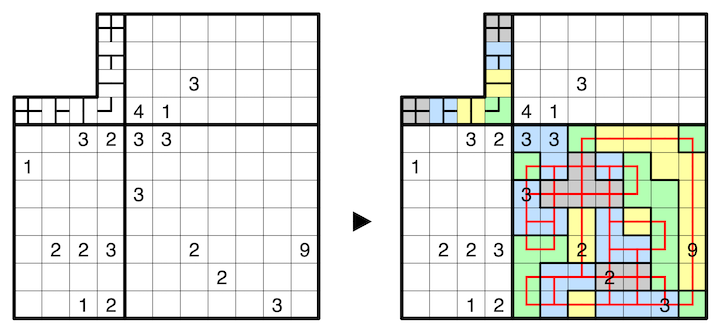

Then, divide the grid into orthogonally connected areas such that no two areas of the same size share an edge. A number inside the grid indicates the size of the area containing that cell. Within an area, all shapes of the loop network must be identical up to rotation, or are empty, but no area may be completely unvisited by the loop network. Adjacent areas must contain different shapes.
A 7x7 example is provided:
